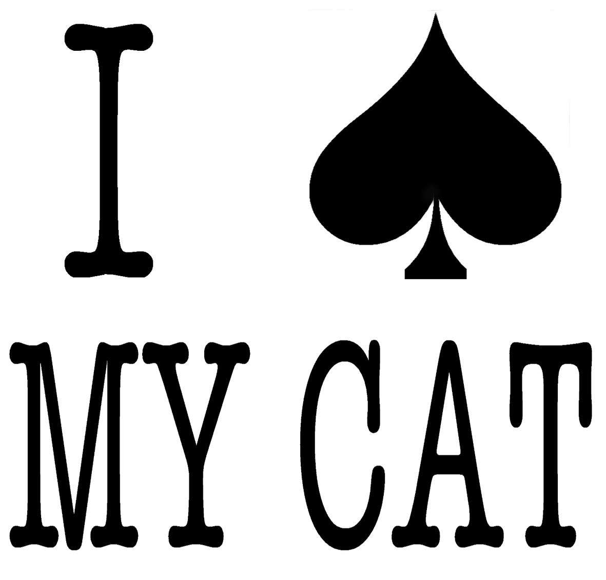

Tuesday, July the 26th, 2011
back to: title, date or indexes
It has been an industrious week at Hooting Yard, what with the publication of a brand new paperback and the production of those lovely lapel accoutrements. Global domination has never seemed so surely within my grasp. Whatever next?, you may ask. Fridge magnets? Monogrammed bomber jackets? Hooting Yard tea-cosies? Tee-shirts?
Mention of tee-shirts is as good a pretext as any to bring to your attention this splendid (if unrealised) design by recently-deceased Hooting Yard aficionado Martin Clare, recorded by his brother in a funeral tribute.
